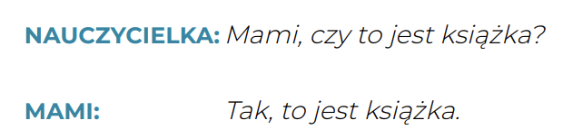
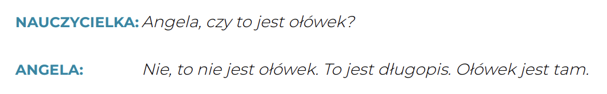
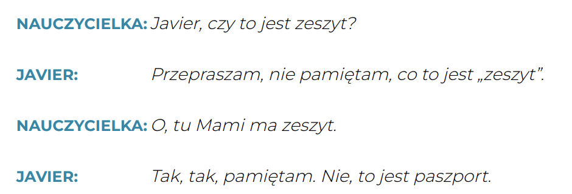
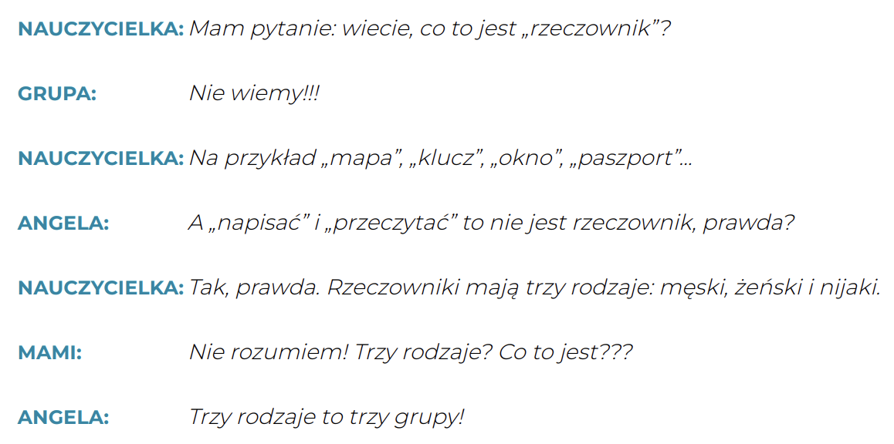
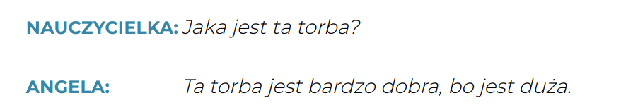
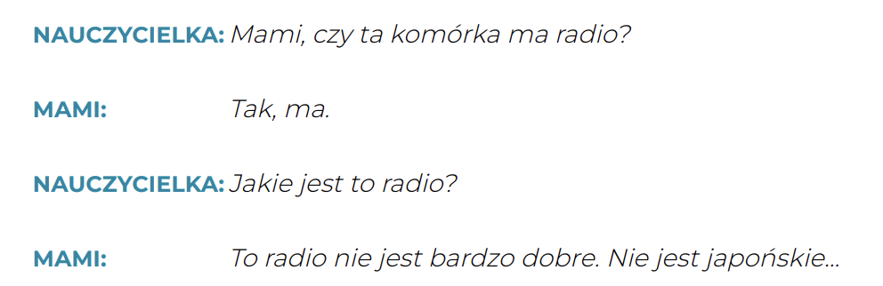

Krok Po Kroku 1
Temat 03 - Mami, kto to jest?
słownistwo >>
A - Kto...? Co...?
Co słychać? - Как дела?
Co to jest? - Что это такое?
duży - большой
Jak masz na imię? - как тебя зовут?
Kto to jest? - Кто это?
mały - малый
Mam na imię Javier - Меня зовут Хавьер.
słownik polsko-hiszpański - Польско-испанский словарь
stary - старик
nie pamiętam - Я не помню
nie w szkole - не в школе
niestety - к несчастью
normalnie - нормально
nowy student - новый студент
za mały - слишком маленький
zły - плохой
❓ Kto to jest? — Кто это?
📌 Используется для людей
💬 Ответ:
- To jest nauczycielka. — Это (есть) учительница.
-
To nauczycielka. — Это учительница. ✅
- 👉 Можно опустить глагол "jest"
❓ Co to jest? — Что это?
📌 Используется для предметов / вещей
💬 Ответ:
- To jest słownik. — Это (есть) словарь.
-
To słownik. — Это словарь. ✅
- 👉 Можно опустить глагол "jest"
🔎 Примеры:
👩 Kto to jest? — To moja koleżanka.
📚 Co to jest? — To książka.
⚠️ Уведомление:
В польском языке часто опускается глагол "być" (jest) в подобных фразах — это абсолютно нормально и звучит естественно 👌
B. Czy...?
Dialog 3
Dialog 4
Dialog 5

Czy to jest... ? - Это... ?
❓ Czy to jest...? — Это...?
Это вопрос с выбором "да или нет"
(Проверяем, правда ли, что что-то — это определённый предмет или человек)
🔵 Положительный ответ (twierdząco):
- Tak, to jest słownik. — Да, это словарь.
- Tak, to słownik. — ✅ Можно без "jest"
🔴 Отрицательный ответ (przecząco):
- Nie, to nie jest słownik. — Нет, это не словарь.
- Nie, to nie słownik. — ❌ Без "jest" — тоже правильно
🟡 Расширенный ответ (rozszerzenie):
-
Nie, to nie jest słownik. To jest zeszyt.
→ Нет, это не словарь. Это тетрадь.
⚠️ Уведомление:
Как и раньше, глагол "być" (jest) можно опускать, особенно в разговорной речи:
- Tak, to książka.
- Nie, to nie komputer.
C. Mianownik
Dialog 6

męski - мужской
na przykład - например
napisać - написать
nie rozumiem - Я не понимаю
przeczytać - прочитать
rzeczownik - имя существительное
trzy rodzaje - три вида
żeński - женский
🇵🇱 Rodzaje rzeczowników
(Род существительных в польском языке)
В единственном числе существительное в польском языке может быть:
- 👨 męski — мужской род
- 👩 żeński — женский род
- 👶 nijaki — средний род
👨 Rodzaj męski – Мужской род
📌 Обычно заканчивается на согласную (концовка Ø)
Примеры:
- dom — дом
- pies — пёс
- student — студент
🧑🎨 Исключение: некоторые мужчины по профессии — на -a:
dentysta, poeta, kierowca, artysta, pianista
👉 В женском варианте:
dentystka, poetka, artystka
👩 Rodzaj żeński – Женский род
📌 Чаще всего заканчивается на -a:
Примеры:
- kobieta — женщина
- siostra — сестра
- koleżankat — подруга
📌 Также встречаются окончания:
- согласная: noc, mysz, miłość, złość
(часто эмоции или абстрактные понятия)
- -i: pani, sprzedawczyni, bogini, mistrzyni
👶 Rodzaj nijaki – Средний род
📌 Окончания: -o, -e, -ę
Примеры:
- dziecko — ребёнок
- okno — окно
- pole — поле
- zwierzę — животное
📌 Латинские слова — на -um:
- muzeum, centrum, gimnazjum, laboratorium
⚖️ Согласование с другими словами
Грамматический род влияет на:
- прилагательные (ładny dom, ładna kobieta, ładne dziecko)
- местоимения (ten dom, ta kobieta, to dziecko)
- числительные, глаголы в прошедшем времени и т.д.
🧠 Пол = род?
Чаще всего грамматический род совпадает с естественным:
Dialog 7

Dialog 8
Dialog 9
📌 1. Jaki? Jaka? Jakie? — Какой? Какая? Какое?
Эти вопросительные местоимения используются, чтобы узнать качество или характеристику чего-то (человека или предмета).
📌 2. To, Ten, Ta, Tamten... — Указательные местоимения
Показываем, о каком предмете или человеке идёт речь, и где он находится (близко или далеко).
🧠 Полезно помнить:
- To jest... — Это есть... (часто "jest" опускается)
- Местоимения ten, ta, to согласуются по роду с существительным
- С прилагательными (jaki/sympatyczny) — тоже согласование по роду и числу
D. Kolory
🎨 Как спросить о цвете по-польски